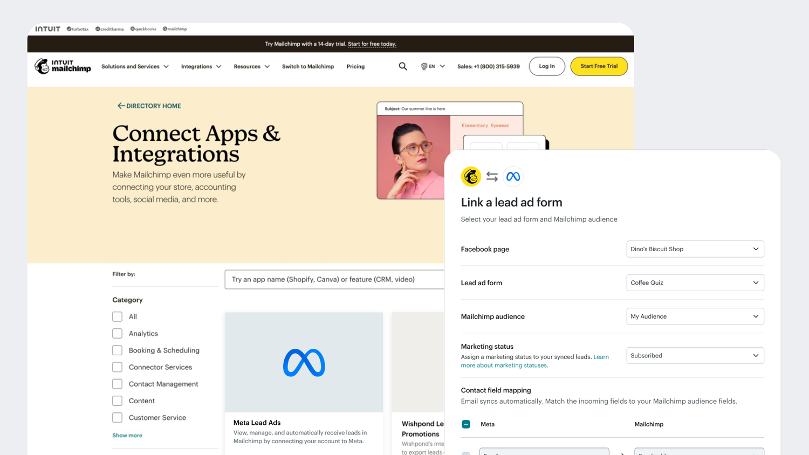
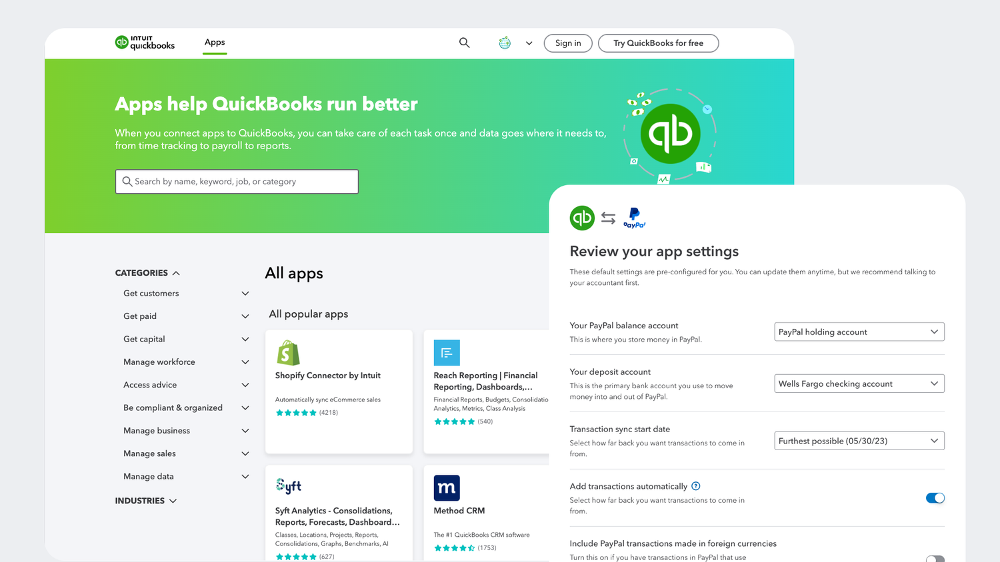

Unifying App Integration
Experience
for Intuit Marketplace
I designed a standardized, research-driven integration template to replace custom-built flows, creating a scalable setup experience for Intuit's third-party app ecosystem — successfully reducing user drop-off by 15% for high-demand third-party apps such as PayPal, Square, and Shopify.


01 · Challenge
A long windy road turns the users away
The Intuit App Marketplace supports over 5 million users and 700+ integrations, yet faces a critical bottleneck: 40% of users abandon the setup process before completion. User research in 2025 revealed that fragmented, custom-built flows created a "confidence gap," where users felt the process was too lengthy and lacked clarity. My challenge was to replace these high-friction, bespoke paths with a streamlined, standardized integration framework that drives automation and user trust.
The business problem ran alongside it: a 9-week rollout per new partner, a growing maintenance backlog, and no way to scale without recreating the same work. My design targeted the setup experience directly — we measured a 15% drop-off reduction within that flow post-launch.
02 · My Tasks
Research through QA — keeping three teams moving
I led design from research synthesis through QA and handoff. Coordinating across Platform Engineering, QuickBooks, and Mailchimp meant navigating different timelines and different definitions of done. I ran design crits, incorporated feedback fast, and kept the direction clear enough for the team to keep moving.
I transformed research insights into visual designs and interactive prototypes, successfully aligning all stakeholders to pivot toward a simplified, validated design direction. From that successful alignment, I was able to secure more opportunity to interview accountants and small business owners to help define product requirements, and further standardize key design details.
"

Design system pattern — now reused across all integrations
03 · Impact
A pattern that now scales
Partnering with Product and Engineering throughout the current-experience audit through spec QA, I delivered a production-ready templated widget and a standardized data integration pattern now integrated into my team's design system. Launched in 2025, the new experience is currently live across QuickBooks and Mailchimp, providing a consistent experience for high-demand third-party apps. Drop-off within the redesigned setup flow fell 15% post-launch.
The team went from custom-building every integration to having a standard they can reference going forward.


A production-ready code library for any integration